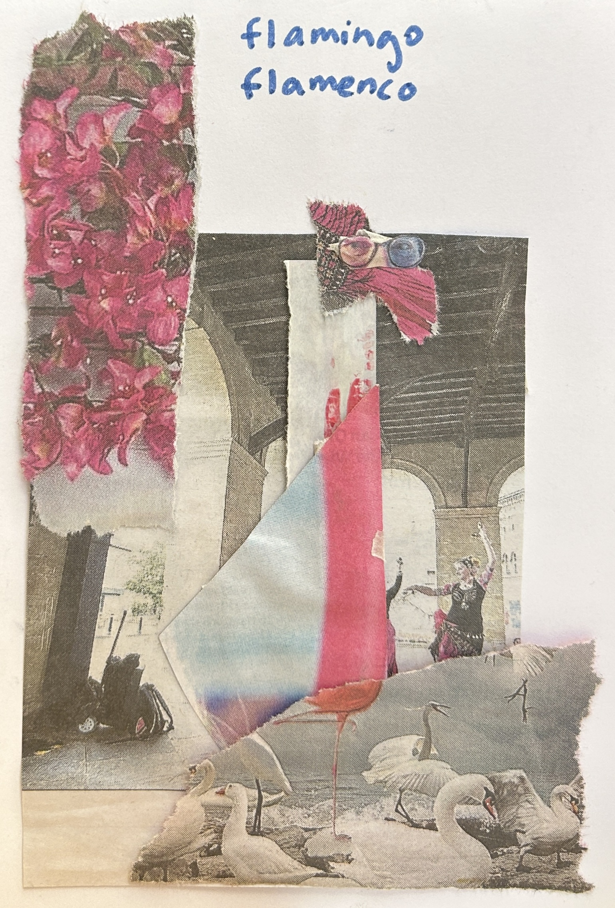

Illustrations + 2D media

you deserve all, 2023. ink on A4 sketchbook paper and digital drawing. produced for mom's birthday.

flamingo/flamenco, 2023. magazine collage on A6 card and limited zines (produced during Blossoming Wards workshop).

the gentleman, 2023. ink and highlighter on postcard. produced in support of Sobell House Hospice's art auction to fundraise for hospice care training for nurses.

初一, 2022. ink on printer paper.

left behind, 2018. graphite on A4 card.
![digital sketch with title text 'Happy 10 years, OxPop!' and subtitle text 'We work to prevent suffering and improve human health for everyone through clinical trials, health economics, ethics, perinatal epidemiology, cancer epidemiology, and much more!'. the sketch also includes a rough illustration of a green-and-blue globe with faces peering around every continent. lining the bottom of the image are simplified portraits of patients, staff, researchers, and students who have contributed to the Nuffield Department of Population Health for the last ten years.](../images/ndph.png)


 cultural field studies, 2018. ink, marker, and colour pencil on A3 card. included in Advanced Placement Studio Art portfolio scoring 5 (extremely well qualified for university-level visual arts coursework).
cultural field studies, 2018. ink, marker, and colour pencil on A3 card. included in Advanced Placement Studio Art portfolio scoring 5 (extremely well qualified for university-level visual arts coursework).